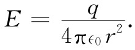
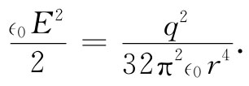

我们的新关系式（8.35）说明，即使单个点电荷q也将有若干静电能量。在这种情况下，电场是由下式给出的：

因此，在距离电荷r处的能量密度为

我们可以取一个厚度为dr、面积为4πr2 的球壳作为体积元。总能量为
现在对于在r=∞的上限毫无困难。但对于一个点电荷来说，我们本应从下限r=0积起，而这会给出一个无限大的数值。式（8.35）讲：在一个点电荷的场中会有无限大的能量，尽管我们过去是从只在点电荷之间 才有能量那种观点出发的。在我们原来关于一群点电荷的能量公式（8.3）中，并未把电荷对于其本身的任何相互作用能包括在内。实际发生的情况乃是：当我们转变到电荷的连续分布、即式（8.27）时，就曾计入了每一无限小 电荷与所有其他无限小电荷之间的相互作用能。同一计算也包括在式（8.35）之内，因而当将其应用于有限多 点电荷时，我们已把从无限小部分电荷聚集起来所要的那种能量也包括进去了。事实上，我们将注意到：若应用有关一个带电球体的能量表示式（8.11），并让其中半径趋于零，则我们也会获得式（8.36）中的那种结果。
必须断言，把能量定域在场中的那种概念同存在点电荷的假设是彼此不相容的。一种摆脱困难的办法应该说明，像电子那样的基本电荷并不是一些点，而实际上是电荷的微小分布。或者，本来我们也可以这样讲：在十分微小的距离内，电学理论已有些错误，或局域能量守恒的概念有点不对头。对于这两种观点中的任一个观点都存在困难，这些困难从未得到克服，一直遗留到今天。此后在某个时候，当我们已讨论过诸如电磁场中的动量那样一些附加概念之后，就将对在理解大自然时所碰到的这些基本困难给予更全面的估量。